공조냉동기계산업기사 (2002-05-26 기출문제)
1과목: 공기조화
1. 다음 기술내용은 온수난방의 특징을 기술한 것이다. 적합치 못한 항목은?
- 온수온도를 계절적으로 중앙기계실에서 자동적으로 용이하게 조절할 수 있다.
- 연속 운전시 종합 열손실이 크다.
- 증기난방보다 일반적으로 설비비가 많이 든다.
- 저온방열이므로 안전하고 양호한 온열 환경이 얻어진다.
(정답률: 66%)

2. 온풍난방장치와 거리가 먼 것은?
- 스태크
- 부트
- 트랩
- 레지스터
(정답률: 79%)
3. 31℃의 외기와 25℃의 환기를 1 : 2의 비율로 혼합하고 바이패스 팩터가 0.16인 코일로 냉각 제습할 때의 코일 출구온도는? (단, 코일의 표면온도는 14℃이다.)
- 14℃
- 16℃
- 27℃
- 29℃
(정답률: 60%)
4. 다음은 난방설비에 관한 기술이다. 적당한 것은?
- 소규모 건물에서는 증기난방보다 온수난방이 흔히 사용된다.
- 증기난방은 실내상하 온도차가 적어 유리하다.
- 복사 난방은 급격한 외기 온도의 변화에 대한 방열량 조절이 우수하다.
- 온수난방은 온수의 증발 잠열을 이용한 것이다.
(정답률: 59%)
5. 다음의 증기난방의 분류 중에 적당하지 않은 것은?
- 고압식, 저압식
- 단관식, 복관식
- 건식환수법, 습식환수법
- 개방식, 밀폐식
(정답률: 63%)
6. 다음은 공기 조화설비 계획시의 조-닝(Zonning)에 관한 고려 사항이다. 가장 적당한 것은?
- 실의 공조 부하 특성
- 벽체의 단열성
- 실의 층고
- 벽체 면적
(정답률: 61%)
7. 다음 그림과 같은 벽체의 열관류율 K값은 몇 kcal/m2h℃인가?
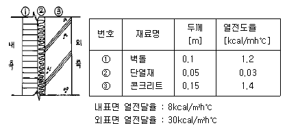
- 0.248
- 0.363
- 0.496
- 0.521
(정답률: 50%)
8. 덕트의 재료로서 일반적으로 가장 많이 사용되는 것은?
- 아연도 철판
- PVC판
- 스테인레스판
- 알루미늄판
(정답률: 69%)
9. 온풍로(Furance) 난방의 특징이 아닌 것은?
- 설치면적이 좁으므로 설치장소에 제한을 받지 않는다
- 열용량이 크므로 예열시간이 많이 걸린다.
- 열효율이 높다.
- 보수 취급이 간단하다.
(정답률: 68%)
10. 2중 덕트방식의 이점이 아닌 것은?(오류 신고가 접수된 문제입니다. 반드시 정답과 해설을 확인하시기 바랍니다.)
- 냉.난방의 요구에 따라 자유롭게 대응할 수 있다.
- 전공기방식으로 실내에는 냉온수 배관 또는 증기배관이 필요없다.
- 모든 공조기기를 1개소에 집중 설치할 수 있으므로 설비가 간단하고, 보수관리 운전이 편하다.
- 각실의 실온을 개별적으로 제어할 수가 있다.
(정답률: 44%)
11. 다익형 송풍기를 사용하는 경우에 해당되지 않는 것은?
- 건설비가 저렴할 때
- 기계실이 협소할 때
- 송풍기의 운전 시간이 짧을 때나 다소 동력비가 증가해도 무방할 때
- 풍량에 비해 요구 정압이 대단히 높을 때
(정답률: 49%)
12. 방열기의 호칭법에서 중단에 표시되는 것은?
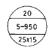
- 유입관의 크기
- 유출관의 크기
- 절(section) 수
- 방열기의 종류와 높이
(정답률: 79%)
13. 증기난방에서 각실의 방열기에서 발생하는 열은?
- 증발잠열
- 증기냉각열
- 액체열
- 과열의 열
(정답률: 63%)
14. 다음의 열부하 중 현열만 존재하는 것은?
- 외기부하
- 재열부하
- 실내부하
- 예냉부하
(정답률: 63%)
15. 다음은 보일러의 부속장치를 나눈 것이다. 잘못된 것은?
- 통풍장치 - 연도, 통풍계, 연돌
- 급수장치 - 수량계, 급수밸브, 급수펌프
- 송기(送氣)장치 - 증기배관, 증기해더, 증기유량계
- 안전장치 - 수면계, 온도계, 압력계
(정답률: 54%)
16. 개방된 용기에 물을 넣고, 건구온도와 상대습도가 일정한 실내에 장시간 방치하여두면 물의 온도는 공기의 어떤 상태에 가까워지는 변화를 하는가?
- 건구온도
- 습구온도
- 노점온도
- 절대온도
(정답률: 41%)
17. 공기 중에 포함되어 있는 수증기의 중량으로 습도를 표시한 것은?
- 비교습도
- 포화도
- 상대습도
- 절대습도
(정답률: 44%)
18. 어떤 실내의 전체 취득열량이 7600kcal/h, 잠열량이 2100kcal/h 이다. 이 때 실내를 26℃, 50%(RH)로 유지시키기 위해 취출 온도차를 10℃로 일정하게 하여 송풍한다면 실내 현열비는 얼마인가?
- 0.68
- 0.82
- 0.72
- 0.95
(정답률: 60%)
19. 다음 중 복사 냉· 난방 방식에 대한 설명이 아닌 것은?
- 실내 수배관이 필요하며, 결로의 우려가 있다
- 설치비가 고가이고, 중간기에는 냉동기의 운전이 필요하다
- 조명이나 일사가 많은 방에 효과적이며, 천장이 낮은 경우에 적합하다
- 건물의 구조체가 파이프를 설치하여 여름에는 냉수, 겨울에는 온수로 냉· 난방을 하는 방식이다
(정답률: 63%)
20. 다음은 강제통풍식 냉각탑에 관련된 설명이다. 맞지않는 것은?
- 산수장치에 의하여 산포된 물은 자연유하 또는 충진물 표면을 따라 흘러내리며 유입되는 공기와 접촉에 의하여 열교환을 일으킨다.
- 공기와 물의 접촉방법에 따라 직교류형, 역류형, 평행류형이 있다.
- 충진물로서는 염화비닐성형품, 목재 등을 사용하며, 냉각탑 공기출구에는 엘리미네이터를 설치하여 물의 유출을 방지한다.
- 냉각탑 운전시 비산되는 수분으로 인하여 보충수의 보급이 필요하므로 관리를 잘하면 보충수는 필요하지 않다.
(정답률: 64%)
2과목: 냉동공학
21. 응축기의 냉각 방법에 따른 분류에 속하지 않는 것은?
- 수냉식
- 증발식
- 증류식
- 공냉식
(정답률: 69%)
22. 다음의 2원 냉동 사이클 설명 중 옳은 것은?
- 일반적으로 고온측에는 R13,R22,프로판 등을 냉매로 사용한다.
- 저온측에 사용하는 냉매는 R13,R22,에탄,에칠렌 등이 다.
- 팽창탱크는 저압측에 설치하는 안전장치이다.
- 고온측과 저온측에 사용하는 윤활유는 같다.
(정답률: 38%)
23. 가로 50㎝, 세로 75㎝인 평판이 250℃로 가열 되었다 20℃공기가 불어 온다면 열전달은? (단, 열전달 계수는 21.5 ㎉/m2 h℃ 이다.)
- 4945 ㎉/h
- 1854 ㎉/h
- 3708 ㎉/h
- 2472 ㎉/h
(정답률: 41%)
24. 다음 응축기 중에서 용량이 비교적 크며 열통과율이 가장 좋은 것은?
- 공냉식 응축기
- 7통로식 응축기
- 증발식 응축기
- 입형 셸 엔드 튜브식 응축기
(정답률: 40%)
25. 냉동장치의 운전을 정지시킬 때 가장 먼저 하여야 하는 것은?
- 팽창밸브를 닫는다
- 전동기를 정지 시킨다
- 압축기의 토출밸브를 닫는다
- 냉각수의 순환을 정지 시킨다
(정답률: 34%)
26. 다음 이상 기체의 등온 과정 설명으로 옳은 것은?
- dS = 0
- dQ = 0
- dW = 0
- dU = 0
(정답률: 49%)
27. 흡수식 냉동기에 사용하는 흡수제로써 요구되는 성질은 다음과 같다. 옳지 않은 것은?
- 용액의 증발압력이 높을 것
- 농도의 변화에 의한 증기압의 변화가 적을 것
- 재생에 많은 열량을 필요로 하지 않을 것
- 점도가 높지 않을 것
(정답률: 61%)
28. 다음 중 팽창밸브의 종류가 아닌 것은?
- 온도식 자동팽창밸브
- 정압식 자동팽창밸브
- 정적식 자동팽창밸브
- 수동 팽창밸브
(정답률: 61%)
29. 1kgf의 공기가 온도 20℃의 상태에서 등온변화를 하여,체적의 증가는 0.5m3, 엔트로피의 증가량은 0.⑤kcal/kgfK였다. 초기의 비체적은 얼마인가?
- 0.293(m3/㎏f)
- 0.465(m3/㎏f)
- 0.508(m3/㎏f)
- 0.614(m3/㎏f)
(정답률: 42%)
30. 다음 설명 중 옳은 것은?
- 일의 열당량은 1/427㎉/㎏· m 이다. 이것은 427㎏· m의 일이 열로 변할 때, 1㎉의 열량이 되는 것이다.
- 응축온도가 일정하고 증발온도가 내려가면 일반적으로 토출 가스온도가 높기때문에 히트펌프의 능력이 상승된다.
- 비열 0.5㎉/㎏℃, 비중량 1.2㎏/ℓ 의 액체 2ℓ 를 온도 1℃ 상승시키기 위해서는 2.0㎉의 열량을 필요로 한다.
- 냉매에 대해서 열의 출입이 없는 과정을 등온 압축이라 한다.
(정답률: 65%)
31. 다음 증발식 응축기에 관한 설명 중 옳은 것은?
- 증발식 응축기의 냉수보급은 증발에 의한 물의 소비량만 보급한다.
- 증발식 응축기는 물의 현열을 이용하여 냉각하는 것이다.
- 외기의 습구온도 영향을 많이 받는다.
- 압력강하가 작으므로 고압측 배관에 적당하다.
(정답률: 51%)
32. 다음 압축 냉동 사이클의 성적계수를 옳게 나타낸 것은?
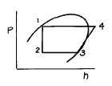
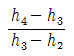
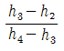
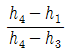
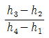
(정답률: 33%)
33. 응축기의 냉매 응축온도가 30 ℃, 냉각수 입구수온이 25℃, 출구수온이 28℃일 때 대수평균온도차(LMTD)는?
- 2 ℃
- 3.27 ℃
- 4.27 ℃
- 5 ℃
(정답률: 62%)
34. 다음 단열압축에 대한 설명 중 옳지 못한 것은?
- 공급되는 열량은 0 이다.
- 공급된 일은 기체의 엔탈피 증가로 보존된다.
- 단열 압축전 보다 온도, 비체적이 증가한다.
- 단열 압축전 보다 압력이 증가한다.
(정답률: 47%)
35. 냉매에 대한 각항의 설명 중 옳지 않는 것은?
- 표준 냉동사이클에 있어서 압축기의 토출가스 온도는 R134a 보다 암모니아가 높다.
- R134a는 물을 함유할 때 Mg 및 Al합금을 침식시킨다.
- R134a는 암모니아에 비하여 기름 분리가 용이하다.
- R134a은 터보 냉동기의 냉매로서 냉방용에 적합하다.
(정답률: 35%)
36. 1 냉동톤의 설명으로 맞는 것은?
- 0℃ 물 1㎏을 0℃ 얼음으로 만드는데 24시간 동안 제거해야할 열량
- 0℃ 물 1ton을 0℃ 얼음으로 만드는데 24시간 동안 제거해야할 열량
- 0℃ 물 1kg을 0℃ 얼음으로 만드는데 1시간 동안 제거해야할 열량
- 0℃ 물 1ton을 0℃ 얼음으로 만드는데 1시간 동안 제거해야할 열량
(정답률: 70%)
37. 다음 중 임계온도가 가장 낮은 냉매는?
- NH3
- R-134a
- R-22
- R-13
(정답률: 33%)
38. 냉매 R - 12의 기준 냉동사이클에서의 냉동효과(㎉/㎏)은 동일한 사이클에 암모니아에 비하여 얼마나 되는가?
- 7%
- 9%
- 11%
- 16%
(정답률: 36%)
39. 주울 톰슨효과와 관계가 가장 큰 것은?
- 자기 냉각법
- 액체 공기
- 자기 냉각
- 2원 냉동
(정답률: 34%)
40. 냉동장치의 보수관리 및 합리적 운전에 관한 설명 중 맞는 것은?
- 액배관 양단의 스톱밸브를 동시에 폐지하더라도 액봉에 의한 사고 발생율은 적다.
- 수액기 겸용의 응축기에 냉매액이 많더라도 응축압력은 변하지 않는다.
- 응축기와 수액기 사이의 균압관 관경이 너무 작으면 수액기로 액이 흘러 내리기 어렵다.
- 증발압력이 낮고 응축온도가 높을수록 장치의 냉매순환량은 크게 된다.
(정답률: 50%)
3과목: 배관일반
41. 다음 중 납관의 이음용 공구가 아닌 것은?
- 사이징투울
- 드레서
- 맬릿
- 터언핀
(정답률: 59%)
42. 암거내에 증기 난방 배관 시공을 하고자할 때 나관 상태라면 나관 표면에 무엇을 발라 주는가?
- 콜타르
- 시멘트
- 테프론 테이프
- 석면
(정답률: 64%)
43. 증기 관말트랩 바이패스 설치시 필요없는 부속은?
- 엘보
- 유니온
- 글로브밸브
- 안전밸브
(정답률: 56%)
44. 배관의 지지 간격 결정조건에 포함되지 않는 사항은?
- 관경의 대소
- 수압시험 압력
- 보온 및 보냉의 유무
- 유체의 흐름
(정답률: 35%)
45. 공기조화설비에서 2중덕트방식의 장점은?
- 설비비가 비교적 적게 든다.
- 덕트가 차지하는 공간이 작게 된다.
- 냉온풍의 혼합 비율이 많아져도 경제적 운전이 가능하다.
- 혼합유닛에서 온도와 풍량을 조절 할 수 있어 유리하다.
(정답률: 40%)
46. 공동주택에서의 허용 급수최고 압력은?
- 2 ㎏f/cm2
- 3‾4 ㎏f/cm2
- 6‾8 ㎏f/cm2
- 10 ㎏f/cm2
(정답률: 50%)
47. 증기와 드레인을 분리하고 공기와 드레인을 함께 처리하는 트랩은?
- 열동식 트랩
- 플로우트 트랩
- 버킷트 트랩
- 충격식 트랩
(정답률: 47%)
48. 플랜지의 종류에서 홈꼴형 시트(seat)를 설명한 것은?
- 호칭압력이 16㎏f/㎝2이며 기밀을 요구하는 배관에 사용한다.
- 호칭압력이 16㎏f/㎝2이며 위험성 유체 배관 및 기밀유지를 요구하는 배관에 사용한다.
- 호칭압력이 63㎏f/㎝2이며 주철제 및 구리 합금제 플랜지를 사용한다.
- 호칭압력이 63㎏f/㎝2이며 금속제 플랜지를 사용하며 기밀을 요구하는 배관에 사용한다.
(정답률: 46%)
49. 증기주관 내 상층부에서 분기할 경우 열팽창에 의한 관의 신축을 흡수키 위해서 증기주관과 입상 분지관의 이음은?
- 스위블이음
- 비임분기
- 편심이음
- 루우프 조인트
(정답률: 58%)
50. 증기 속에 수분이 섞여나가는 것을 방지하기 위한 장치는?
- 증기내관
- 블루우관
- 스캠판
- 급수내관
(정답률: 36%)
51. 스케줄 번호는 다음 중 무엇을 나타내기 위함인가?
- 관의 외경
- 관의 내경
- 관의 두께
- 관의 길이
(정답률: 49%)
52. F.C.U.의 배관 방식 중 냉수 및 온수관이 각각 설치되어 온냉수의 혼합손실이 없는 배관 방식은?
- 단관식
- 2관식
- 3관식
- 4관식
(정답률: 62%)
53. 배관의 직관부에서 압력손실이 적어질 수 있는 조건은?
- 유속이 클 때
- 관의 마찰계수가 클 때
- 관의 길이가 길 때
- 관경이 클 때
(정답률: 61%)
54. 온수난방 배관 시공시 배관의 구배에 관해 설명한 것으로서 틀린 것은?
- 배관의 구배는 1/250 이상으로 한다.
- 단관 중력 환수식의 온수 주관은 하향구배를 준다.
- 상향 복관 환수식에서는 온수 공급관, 복귀관 모두 하향 구배를 준다.
- 강제 순환식은 배관의 구배를 자유롭게 한다.
(정답률: 47%)
55. 증기난방의 분류에 해당되지 않는 것은?
- 중력 환수식
- 진공 환수식
- 정압 환수식
- 기계 환수식
(정답률: 66%)
56. 냉동장치의 안전장치 중 압축기로의 흡입압력이 소정의 압력 이상이 되었을 경우 과부하에 의한 압축기용 전동기의 위험을 방지하기 위하여 설치되는 밸브는?
- 흡입압력 조정밸브
- 증발압력 조정밸브
- 정압식 자동팽창밸브
- 저압측 플로트밸브
(정답률: 63%)
57. 관용나사의 테이퍼는?
- 1/16
- 1/32
- 1/64
- 1/128
(정답률: 39%)
58. 증기배관 보온재료로 부적당한 것은?
- 로크울
- 글래스울
- 규조토
- 콜크
(정답률: 36%)
59. 배관의 지지 목적이 아닌 것은?
- 배관계의 중량의 지지와 고정
- 진동에 의한 지지
- 열 팽창에 의한 배관계의 신축의 제한 지지
- 부식과 보온 지지
(정답률: 65%)
60. 높이 8m, 배관의 길이 16m, 지름 40mm인 배관으로 플러쉬 밸브 1개를 설치한 2층 화장실에 급수하려면 수도본관의 수압은 얼마가 필요한가? (단, 관의 마찰저항손실은 0.324kgf/cm2 이고, 플러쉬 밸브의 필요 수압은 0.7kgf/cm2 이다.)
- 1.624gf/cm2
- 1.824kgf/cm2
- 3.2kgf/cm2
- 4.5kgf/cm2
(정답률: 38%)
4과목: 전기제어공학
61. 유도전동기에서 동기속도는 3600rpm이고, 회전수는 3420rpm이다. 이 때의 슬립은 몇 % 인가?
- 2
- 3
- 4
- 5
(정답률: 41%)
62. 서보기구는 물체의 위치, 방향, 자세 등을 제어량으로 하는 분야에 널리 사용되며, 목표치의 임의 변화에 추종하도록 구성되어 있다. 이 제어시스템의 특징을 잘 설명하고 있는 것은?
- 제어량이 전기적 변위이다.
- 목표치가 광범위하게 변화할 수 있다.
- 개루프 제어이다.
- 현장에서 제어되는 일이 많다.
(정답률: 54%)
63. 제어요소의 동작 중 연속동작이 아닌 것은?
- 비례제어
- 비례적분제어
- 비례적분미분제어
- 온.오프(ON.OFF)제어
(정답률: 68%)
64. 온도 보상용으로 사용할 수 있는 것은?
- 다이오드
- 다이액
- 더미스터
- SCR
(정답률: 56%)
65. 그림과 같은 블록선도와 등가인 것은?
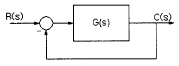
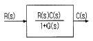
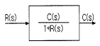
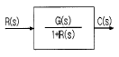
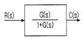
(정답률: 64%)
66. 어떤 제어계통을 부궤환 제어계통으로 만들면 오픈 루프(open loop) 시스템 때보다 루프 이득은?
- 불변이다.
- 증가한다.
- 증가하다가 감소한다.
- 감소한다.
(정답률: 32%)
67. R-L-C 직렬회로의 합성 임피던스를 구하는 관계식은?
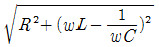
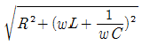
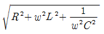
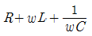
(정답률: 32%)
68. 3상 유도전동기의 출력이 5마력, 전압 220V, 효율 80%, 역률 90%일 때 전동기에 유입되는 선전류는 몇 A 인가?
- 11.6
- 13.6
- 15.6
- 17.6
(정답률: 48%)
69. 그림은 전동기 속도제어의 한 방법이다. 전동기가 최대 출력을 낼 때, 다이리스터의 점호각은 몇 rad 이 되는가?
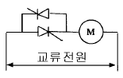
- 0
- π/6
- π/2
- π
(정답률: 59%)
70. 전기회로에서 부하에 흐르는 전류는 전압에 비례한다는 옴의 법칙에서 전기저항의 단위는?
- A
- V
- R
- Ω
(정답률: 62%)
71. 일정 전압의 직류전원에 저항을 접속하고 전류를 흘릴때, 이 전류값을 50% 증가시키기 위하여는 저항값을 몇 배로 하면 되는가?
- 0.60
- 0.67
- 0.80
- 1.20
(정답률: 47%)
72. 그림과 같이 접지저항을 측정하였을 때 R1의 접지저항을 계산하는 식은? (단, R12=R1+R2, R23=R2+R3, R31=R3+R1 이다.)
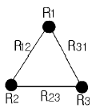
- R1=1/2 (R12+R31+R23)[Ω]
- R1=1/2(R31+R23-R12)[Ω]
- R1=1/2(R12-R31+R23)[Ω]
- R1=1/2(R12+R31-R23)[Ω]
(정답률: 52%)
73. 제어계의 기본 구성요소가 아닌 것은?
- 제어목적
- 제어대상
- 제어요소
- 결과
(정답률: 19%)
74. 프로세스제어에 있어서 최적제어의 일반적인 의미가 아닌 것은?
- 최대효율 유지
- 최대수량 생산
- 최저 단가 제품생산
- 최저 속응성 유지
(정답률: 36%)
75. 그림과 같은 논리식 및 논리회로를 바르게 나타낸 것은?
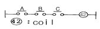
 , NOT회로
, NOT회로 , NOR회로
, NOR회로- F=A+B+C, OR회로
- F=ABC, AND회로
(정답률: 51%)
76. 직류전동기에서 전기자 전도체수 Z, 극수 P, 전기자 병렬회로수 a, 1극당의 자속 φ[Wb], 전기자 전류 Ｉ[A]일 때 토크는 몇 N.m 인가?
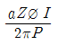
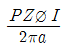
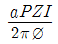
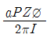
(정답률: 43%)
77. 그림과 같은 회로에서 합성 정전용량을 구한 것은?
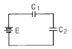
- C0=C1+C2
- C0=C1-C2
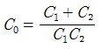
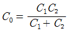
(정답률: 48%)
78. 오프 셋(OFF-SET)이 없게 할 수 있는 동작은?
- 2위치동작
- P동작
- PＩ동작
- PD동작
(정답률: 33%)
79. 직류 타여자전동기의 계자전류를 1/n로 하고 전기자회로의 전압을 n 배로 하면 속도는 어떻게 되는가?
- 1/n2
- 1/n
- 2n
- n2
(정답률: 33%)
80. 다음 논리식 중 맞는 것은?
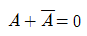
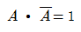
- A+1=A
- A·B+A=A
(정답률: 50%)